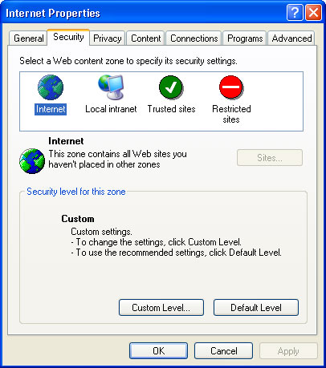
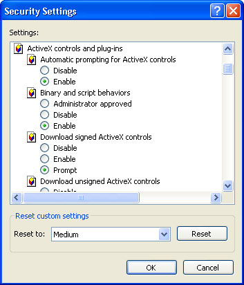

Free
computer Tutorials
|
Free
computer Tutorials
|
|
 home home |
Stay at Home and Learn | ||||
Internet Options - Security
For this tutorial, you'll need the Internet Options dialogue box. To see how to bring it up, click this page (opens in a new windows): How to bring up the Internet Options Dialogue Box
If you want to protect your PC while surfing the internet, then the Security tab of the Internet Options dialogue box has some essential settings. Bring up Internet Options (follow the link above, if you don't know how). Click the Security tab to see the same screen as in the image below (Internet Explorer 6):  The idea here is that you split your internet surfing in to Zones. There's four Zones to choose from (Internet, Local intranet, Trusted sites, Restricted sites). Once you have selected a Zone, you then click the Custom Level button to select the settings for that Zone. If you click on Trusted sites or Restricted sites, the Sites button becomes available. The Sites button is not available if Internet is the selected zone.
The first Zone, though, is Internet. A highly recommended strategy is to disabled just about everything in the Internet zone. You do this by clicking the Custom Level button, and unchecking just about everything on the list. Then select Trusted sites, click the Custom Level button, and turn most things back on. Sites that you trust can then be added to your list by clicking the Sites button. This way, things like pop ads, harmful JavaScript, or Spyware are less likely to damage your PC. The snag is, there's quite a lot of options to choose from when you
click the Custom Level button! You should see this:  A scroll down the list will reveal a lot of bewildering Security Settings. To see which settings you need for your Internet and Trusted Zones, and thus a safer browsing experience, see the following site (opens in a new window): http://www.jfitz.com/tips/ie_security_config.html The site (not ours) has screenshots of recommended settings, as well as how to add new sites to your Trusted zone. If you have kids in the house, it's a good tactic to use: disable just about everything in the Internet zone, and add Trusted sites to a list you don't mind them viewing. This does NOT mean they won't be able to see un-trusted sites - it just means that if they come across anything that may harm your computer then, because you've disabled everything, your Security Settings should deal with the attack. Surfing the internet this way can be annoying at first. Those shiny, all-singing, all-dancing websites don't look half as good with JavaScript turned off! Put the website in the Trusted site, though, and you'll be able to see it in all its glory.
<--Back One Page Move on to the Next Part--> |
|||||
|